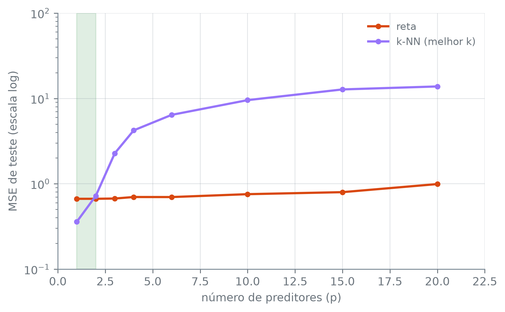

Esta seção corresponde à seção 3.5 de James et al. (2023).
A regressão linear aposta numa forma para \(f\): uma soma de coeficientes, cada um multiplicando uma coluna. O k-NN da seção 7.3 não aposta em forma nenhuma, e deixa a vizinhança de cada ponto decidir o valor previsto ali. Quando a forma que a reta assume compensa, e quando ela custa caro? A régua é a da seção 7.6: o MSE de teste, medido contra uma \(f\) simulada e conhecida.
Quando a forma verdadeira é a da reta
Responder a pergunta com Auto ou Credit não dá. A \(f\) que gerou milhas_por_galao ou saldo é desconhecida. O erro de teste diria qual método erra menos naquele dado, mas não por quê, e não há como mudar a forma da verdade de propósito para ver o que acontece. A saída é simular o próprio dado, com a semente np.random.default_rng(8), começando pelo cenário mais favorável à reta: uma verdade exatamente linear.
Cinquenta pontos de treino, \(x\) uniforme entre -3 e 3, com ruído normal de desvio padrão 0,5 somado a uma reta verdadeira, \(f(x) = 2 + 1{,}5x\). A função f_verdadeiro carrega um segundo termo, \(\text{curvatura} \cdot \sin(0{,}8x)\), que fica zerado por enquanto. Mais adiante ele é ligado aos poucos, sem mudar mais nada.
KNeighborsRegressor(n_neighbors).fit(X, y): o k-NN para resposta numérica. Prevê, para cada ponto, a média da resposta dos n_neighbors pontos de treino mais próximos.
arr.reshape(-1, 1): transforma um array de uma dimensão numa coluna, com uma linha por valor; o -1 deixa o numpy calcular quantas linhas. Os estimadores do scikit-learn esperam X com uma coluna por preditor, mesmo quando há um preditor só.
Sobre o próprio treino, a reta erra 0,26 de MSE. O k-NN com \(k = 1\) erra 0,00, porque cada ponto é seu próprio vizinho mais próximo e a previsão para ele é a resposta que ele mesmo tinha. Com \(k = 9\), erra 0,31, mais que a reta. O coeficiente que a reta encontrou, 1,50, praticamente repete o 1,5 verdadeiro, e o intercepto, 2,08, fica perto do 2,0 verdadeiro, com a folga vinda só do ruído desses cinquenta pontos.
Figura 1: Esquerda: cinquenta pontos de treino, a f verdadeira (uma reta, pois curvatura=0), a reta ajustada (tracejada) e os ajustes de k-NN com \(k = 1\) (linha fina) e \(k = 9\) (linha grossa). Direita: MSE de teste (vinte mil pontos) contra 1/k, em escala log; a reta ajustada é a linha tracejada horizontal, porque ela não depende de k. Em nenhum dos nove valores de \(k\) o k-NN desce abaixo dela.
ax.set_xscale("log"): põe o eixo horizontal em escala logarítmica, em que cada marca vale um múltiplo fixo da anterior. Aqui, espaça por igual \(1/k\) de 1/39 a 1, valores de ordens de grandeza diferentes. ax.set_xlim(inicio, fim) fixa os limites do eixo.
No teste grande, a reta erra 0,25 de MSE. O menor erro do k-NN, entre os nove valores de \(k\) varridos, sai em \(k = 7\) (melhor_k_linear) e chega a 0,35, acima do 0,25 da reta. reta_vence_sempre_quando_linear confirma True: nenhum dos nove valores de \(k\) derruba a reta quando a verdade é dela mesma.
O contraste mais direto é com \(k = 1\): 0,00 de erro no treino, 0,47 no teste. O ajuste que decorou a amostra de cinquenta pontos erra, em média, bem mais num ponto novo. É o sobreajuste da seção 7.3. O pior da varredura, porém, é o extremo oposto: \(k = 39\) (pior_k_linear), com 3,97. Uma vizinhança que junta quase todos os cinquenta pontos de treino achata a inclinação da reta verdadeira e erra sistematicamente nas duas pontas do intervalo de \(x\).
Quando a curvatura cresce
Se a verdade se afasta de uma reta, quem deve sofrer mais: a reta, que não tem como se dobrar, ou o k-NN, que não assume forma nenhuma?
A verdade linear é o caso mais favorável à reta, porque nenhuma forma bate a forma certa. Dado real raramente entrega isso. O termo \(\text{curvatura} \cdot \sin(0{,}8x)\) de f_verdadeiro, deixado em zero até aqui, agora é ligado aos poucos. Os cinquenta valores de \(x\) de treino e o ruído que os acompanha ficam os mesmos, e o teste é sempre contra os mesmos vinte mil pontos, com o mesmo ruído. A única coisa que muda de uma rodada para a seguinte é o quanto a verdade se afasta de uma reta.
Para o k-NN, cada rodada guarda o menor MSE de teste entre os nove valores de \(k\). É o melhor cenário possível para ele: o \(k\) é escolhido olhando o próprio teste, o que na prática não se pode fazer, porque o teste deixaria de medir erro em dado novo. Na prática, \(k\) se escolhe sem espiar o teste.
Figura 2: MSE de teste da reta e do melhor k-NN de cada nível (o menor entre os nove \(k\) varridos acima, escolhido no próprio teste), contra a curvatura da verdade simulada. A reta piora conforme a curvatura cresce; o k-NN quase não se mexe. A faixa sombreada marca o intervalo, entre as curvaturas testadas, em que a curva da reta cruza a do k-NN.
ax.axvspan(x0, x1, color, alpha): sombreia uma faixa vertical do gráfico, entre x0 e x1 no eixo horizontal. alpha controla a transparência.
Nos onze níveis varridos, a reta piora conforme a curvatura cresce, de 0,25 em curvatura 0,0 a 0,83 em curvatura 3,0. reta_piora_a_partir_do_segundo_nivel confirma True: a partir do segundo nível, cada um erra menos que o seguinte, sem exceção. O único passo que foge disso é o primeiro, de curvatura 0,0 para 0,2, e primeiro_passo_nao_piora confirma True. Uma onda de amplitude 0,2 custa à reta tão pouco que o acaso desta amostra de treino basta para compensar.
Enquanto isso, o melhor k-NN de cada nível mal se mexe: 0,35 no começo, 0,36 no fim, com amplitude_knn de 0,02 entre o maior e o menor dos onze. A curva da reta cruza a do k-NN entre a curvatura 1,0, onde a reta ainda vence (0,31 contra 0,34), e a 1,3, onde o k-NN passa à frente (0,35 contra 0,34). transicao_e_unica confirma True: em nenhum nível mais curvo o k-NN perde a dianteira de volta.
Os vinte mil pontos de teste tiram o ruído da medição: com poucas centenas, uma margem de 0,01 entre as curvas bem no cruzamento poderia inventar ou esconder uma travessia. Mas o ponto exato do cruzamento ainda depende dos cinquenta pontos de treino, que são um sorteio só. Outra amostra de treino poderia pôr a travessia um nível antes ou depois. O que se espera em qualquer amostra é o desenho geral: a reta piora depressa com a curvatura, o k-NN piora muito devagar, e a partir de alguma curvatura o k-NN passa à frente.
A maldição da dimensionalidade
A curvatura 2,5, um dos níveis mais altos da varredura acima e já depois da travessia, no trecho em que o k-NN está à frente, serve de base para a última pergunta: o que acontece quando se somam preditores que não têm relação nenhuma com a resposta?
fig, ax = plt.subplots()ax.axvspan(1, 2, color="C2", alpha=0.15)ax.plot( ps, mses_reta_p, color="C1", linewidth=2, marker="o", markersize=4, label="reta")ax.plot( ps, mses_knn_p, color="C3", linewidth=2, marker="o", markersize=4, label="k-NN (melhor k)",)ax.set_yscale("log")ax.set_xlabel("número de preditores (p)")ax.set_ylabel("MSE de teste (escala log)")ax.legend()plt.tight_layout()plt.show()

Figura 3: MSE de teste da reta e do melhor k-NN contra o número de preditores p, com a mesma verdade fortemente não linear em x e p-1 preditores extras sem relação nenhuma com a resposta. Eixo y em escala log, porque as duas curvas crescem em ritmos muito diferentes. A faixa sombreada marca a passagem de p=1 para p=2, onde a vantagem do k-NN desaparece.
ax.set_yscale("log"): a mesma escala logarítmica de set_xscale, agora no eixo vertical, para que 0,36 e 13,84 caibam legíveis no mesmo gráfico.
Com um preditor só, knn_vence_em_p1 confirma True: o k-NN erra 0,36 contra 0,67 da reta. Nesta simulação, basta somar um preditor de ruído para a ordem se inverter, e reta_vence_do_p2_em_diante confirma que a reta segue à frente em todos os sete valores de \(p\) maiores testados. Nos vinte preditores, dezenove deles sem relação com a resposta, a reta chega a 0,99, 1,49 vezes o erro que tinha com um preditor só. O k-NN chega a 13,84, 38,5 vezes o que tinha, e knn_degrada_muito_mais confirma True.
A distância que o k-NN usa para achar o “vizinho mais próximo” soma a contribuição de toda coordenada, relevante ou não. Em vinte dimensões, os cinquenta pontos de treino que bastavam para cobrir bem um único eixo ficam espalhados demais para que algum fique de fato perto de um ponto novo: a vizinhança deixa de significar proximidade. É a maldição da dimensionalidade. A reta paga bem menos. Em \(p = 20\), nenhum dos dezenove coeficientes inúteis passa de 0,13 em módulo, contra 2,48 do coeficiente de \(x\). Somados, porém, esses coeficientes pequenos, estimados com só cinquenta pontos, custam à reta o erro 1,49 vezes maior. É um preço real, mas nada perto das 38,5 vezes que as mesmas coordenadas custam ao k-NN.
Nenhum dos dois vence sozinho
As três medições deram três respostas diferentes. A reta venceu quando a verdade era dela mesma. O k-NN passou à frente a partir de certa curvatura, contanto que a dimensão ficasse baixa. E, nesta simulação, um único preditor extra sem relação com a resposta bastou para devolver a vantagem à reta. Em geral, quanto menos observações há por preditor, mais o método paramétrico leva vantagem. Qual dos dois usar num dado novo depende da forma verdadeira de \(f\), que é justamente a informação que falta em qualquer problema real. Para escolher sem ela, e para escolher \(k\) sem espiar o teste, o capítulo 10 apresenta a validação cruzada.
James, Gareth, Daniela Witten, Trevor Hastie, Robert Tibshirani, e Jonathan Taylor. 2023. An Introduction to Statistical Learning with Applications in Python. Springer.